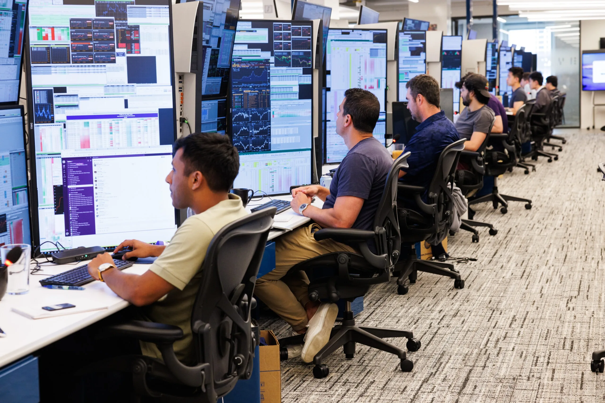
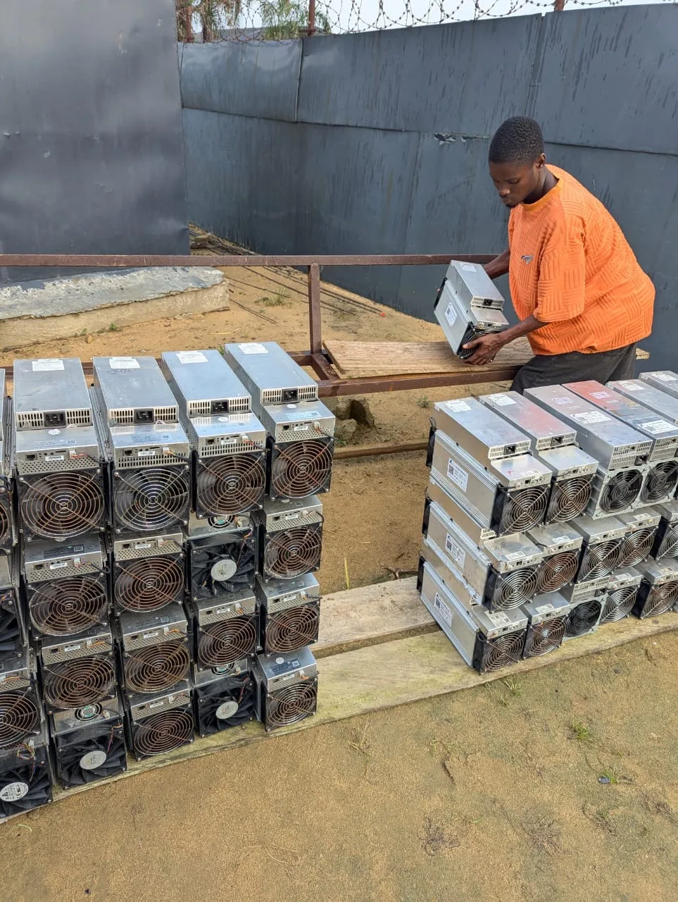

Bitcoin mining in 2025. Does the current supply squeeze by institutions threaten to derail the very idea it was built upon?

Institutional adoption of Bitcoin has grown by 587%, since Microstrategy brought the Bitcoin accumulation playbook to mainstream attention. Since August 2020, when they first started buying Bitcoin, 6.1 million BTC (31%) of circulating supply has gone into institutional ownership.
Bitcoin has been around since 2009. Early adopters, “Bitcoin OGs”, would have come in many forms. From technology enthusiasts, to early investors, curious speculators and those with a desire to support mechanisms that change the financial system.
Old dormant Bitcoin wallets filled with coins acquired during the early days continue to make the headlines. When these wallets arise from the dead and suddenly return to activity after many years, they are often associated with stories of heavy selling, bearish sentiment or profit taking.
The truth is far more nuanced than this. The bigger story actually lies around the wallets from the early days that have not been re-awoken. The story of how most of the earliest mined Bitcoin is permanently lost. From forgotten credentials, to users that have passed away and cases like James Howell where his hard drive (containing 7.5K Bitcoin) was mistakenly thrown out. The likelihood is that 3 to 3.8M Bitcoin (14-18%) of Bitcoin supply is lost and will never re-enter circulation.
The impact is best understood when we look at the fundamental shift in how we think about Bitcoin. The most famous early transaction involving Bitcoin as an alternative currency was the purchase of a pizza by Laszlo Hanyecz for 10K BTC. A purchase that would have been worth $850M at today’s time of writing. The early ideal was that Bitcoin would be a cryptocurrency that would be used as an alternative to fiat. But this is no longer the case.
Institutional Bitcoin adoption involves use cases that acquire and hold large volumes of Bitcoin over the long-term. Exchange traded funds (ETFs) intended for retail access must retain the underlying Bitcoin asset. While Bitcoin, now held as a treasury asset, in preference to traditional long dated government debt serves as a long term cash management vehicle.
For many retail owners, the feature most familiar is that Bitcoin is a scarse and limited asset. So with a fixed supply, and increasing adoption, Bitcoin has the characteristics to become more valuable with time. As a result, Bitcoin is no longer being used to purchase pizzas. It is held as part of a diversified investment account within a buy-and-hold strategy.
The problem, in some quarters, is that this shift in thinking has dramatically changed the supply dynamics of Bitcoin in the market. While Bitcoin has grown its capital base over time, some point to this changing balance of buyers and sellers, as leading to higher levels of Bitcoin price volatility. The reality though, is that Bitcoin is as volatile as some of the world's leading tech stocks, such as Netflix.
While Bitcoin miners have typically liquidated part of their output to ensure they can finance operations in fiat, retaining a larger portion of their Bitcoin is now more strategically important than ever. Firms intending to accumulate Bitcoin are working ever more closely with miners as we saw with American Bitcoin and Hut8 joining forces. Expect more collaborations like this to come.
Until 2040 there are still 21M Bitcoins left to mine, representing about 5% of the remaining supply. Time will tell whether the current strategy of accumulation wins out over a return to the original concept of a freely traded currency. Until then, we still have a lot of mining to do.
Reach out to discuss your Bitcoin needs with NRG Bloom.
